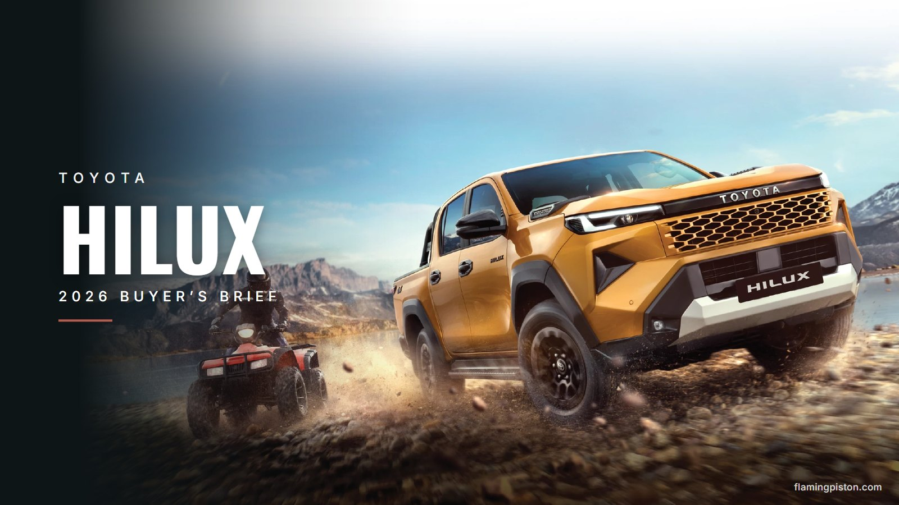
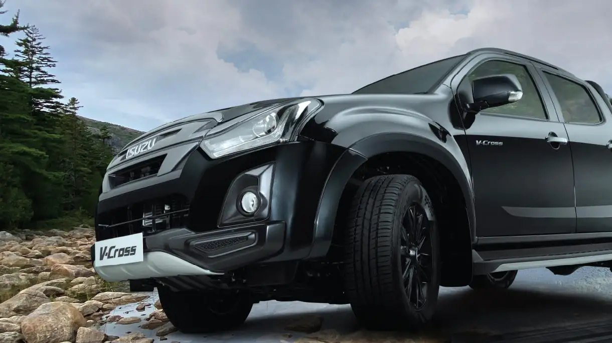
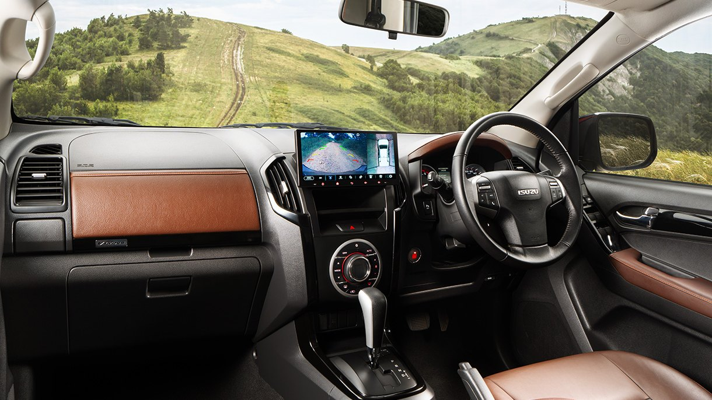
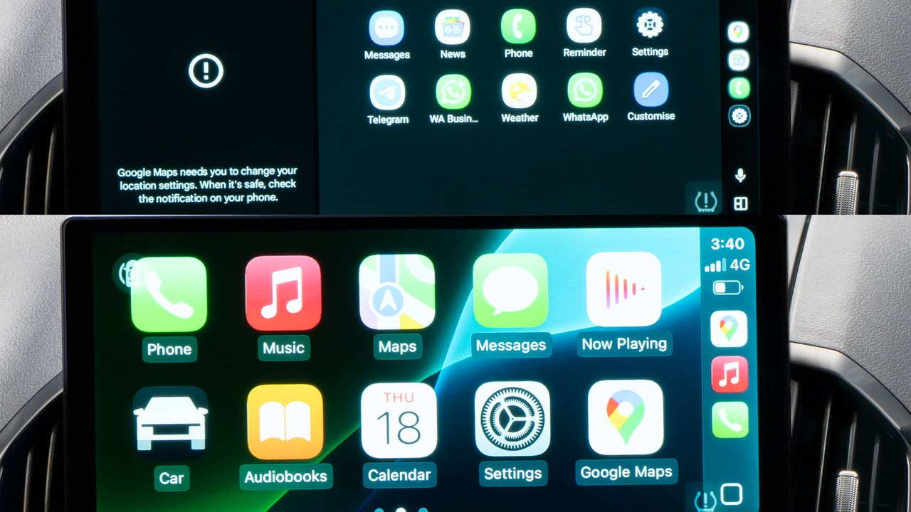
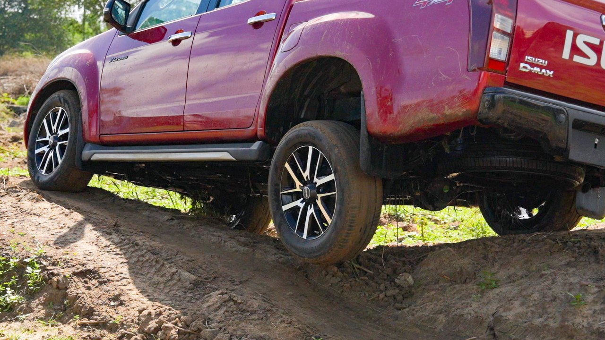
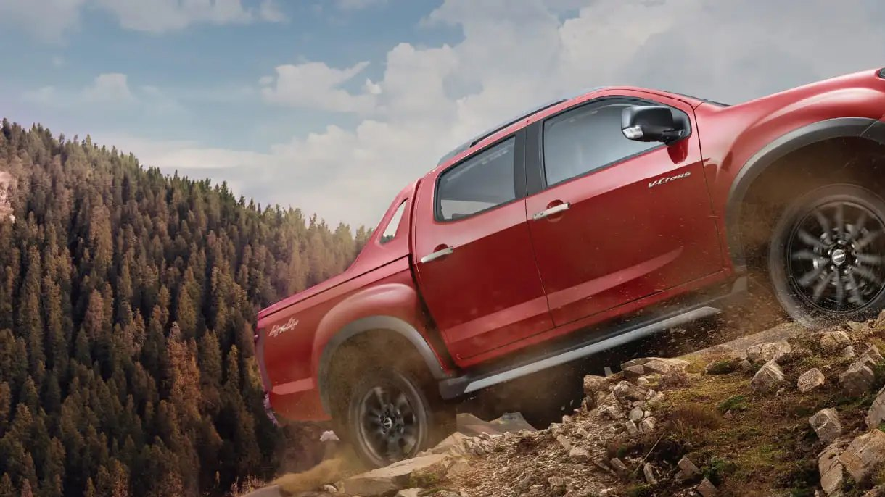
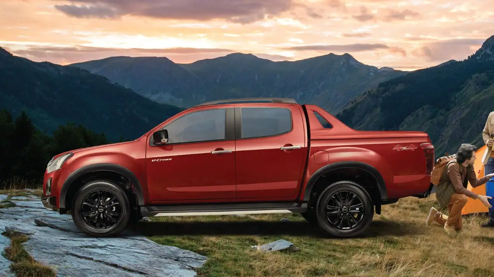

Toyota Hilux 2026: What’s Changed, Price and 4x4 Verdict
By Gagan Mishra

The V-Cross makes you answer one question first: what are you putting in the bed? Isuzu’s February 2026 update made it four-wheel drive only and added a bigger screen and a 360-degree camera on the top trim. The basic trade-off has not changed.
This review uses Isuzu India’s published specifications, the 2026 launch price list and Autocar India’s reporting, including its 2019 drive of the same engine and gearbox, not our own test. Prices and specifications were checked on 21 November 2026. See our Review Methodology for how we separate editorial assessment from measured testing.
A sound choice for owners who will genuinely use the load bed and the four-wheel drive, and a poor substitute for a family SUV. The Z Prestige automatic is the easiest to live with. Check the load figures before you buy: Isuzu rates the bed for 215 kg on the manuals and just 180 kg on the automatic.
| Trim (4x4) | Manual | Automatic |
|---|---|---|
| Z | ₹25.50 lakh | — |
| Z Premium | ₹25.79 lakh | — |
| Z Prestige | ₹27.00 lakh | ₹30.00 lakh |
| Z Prestige Premium | ₹27.28 lakh | ₹30.28 lakh |
The cheap 4x2 version was dropped in February 2026, raising the starting price by ₹1.23 lakh. Every V-Cross is now a 4x4 with an auto-locking differential. The automatic comes only with the Z Prestige and costs about ₹3 lakh more than the equivalent manual. That is a lot for convenience, but it is the version that makes most sense if the truck will also do daily driving.
The V-Cross looks purposeful because its shape is honest: a passenger cab and a separate cargo bed. The 2026 update cleaned it up, with black grille surrounds, a body-coloured bumper and fog-lamp trims instead of the old silver skid plate, no wheel-arch cladding and slimmer LED indicators in the mirrors. The Z Prestige gets new 18-inch diamond-cut alloys; the base Z rides on 16-inch steel wheels.
At 5,295 mm long with a 3,095 mm wheelbase, it is a very large vehicle. That length follows you into every parking space and narrow lane.

Inside, the Z Prestige adds brown leatherette on the dashboard and doors, and Isuzu has improved the rear seat angle. Autocar India’s earlier drive found the rear generous for space but low-set and upright, so the change is welcome. Climbing in, front or rear, is a step up.
The bed is the practical heart of the truck. It measures 1,485 × 1,530 × 465 mm inside, and Isuzu rates its carrying capacity at 215 kg for the manuals and 180 kg for the automatic. That suits camping gear, tools and bikes, but it is far below what the size suggests. Weather protection for luggage needs an accessory cover.

Six airbags, electronic stability control, traction control, hill-descent control and ISOFIX mounts are standard. The 2026 Z Prestige adds a 10.3-inch touchscreen, up from 9 inches, with wireless Android Auto and Apple CarPlay, a 360-degree camera and up to eight speakers. Keyless entry and start, automatic climate control and front and rear armrests are on the equipment list. Check the exact trim sheet, because the base Z is noticeably plainer.

The 1.9-litre turbo-diesel and both gearboxes are unchanged for 2026.
| Engine | Power / Torque | Transmission Options |
|---|---|---|
| 1.9L VGS Turbo Diesel (4-cyl) | 120 kW (163 hp) / 360 Nm | 6-speed Manual, 6-speed Automatic; shift-on-the-fly 4x4 |
When Autocar India tested this engine with the six-speed automatic in 2019, it found a strong mid-range that made the V-Cross an effortless cruiser, with 0–100 km/h in 13.22 seconds. It also found the engine noisy above about 3,200 rpm and the automatic slow to downshift when you push hard. The 4x4 system can be engaged on the move, and the auto-locking differential is now standard on every version.
| Load and size (Isuzu) | Figure |
|---|---|
| Overall length / wheelbase | 5,295 mm / 3,095 mm |
| Load bed (inner L × W × H) | 1,485 × 1,530 × 465 mm |
| Deck carrying capacity | 215 kg (MT) / 180 kg (AT) |
| Fuel tank / DEF tank | 55 litres / 14.7 litres |
Isuzu does not publish an ARAI fuel-economy figure on its V-Cross page, so we have none to quote. The diesel also needs regular AdBlue (DEF) top-ups for its 14.7-litre tank.

This section draws on Isuzu’s published specifications and Autocar India’s 2019 drive of the same engine and gearbox, not our own, in line with our Review Methodology. The V-Cross has not been crash-tested by Bharat NCAP and does not appear on its ratings list. Its safety case rests on the six airbags and stability systems, which are standard on every version.
On the road, Autocar India found the ride bouncy, especially with the bed empty, and the steering heavy at low speed with a large turning circle. The truck’s weight does give it confidence on the highway. Off the road, the shift-on-the-fly 4x4, standard auto-locking differential and hill-descent control give it real ability. We have not tested it there.

Following our Review Methodology, we rate eight criteria on paper, using official specifications, prices and published test evidence rather than our own driving, then average them into a Spec Score.
| Criteria | Score |
|---|---|
| Design | 8.0 / 10 |
| Performance | 7.5 / 10 |
| Mileage Potential | 6.5 / 10 |
| Comfort | 6.5 / 10 |
| Features | 7.0 / 10 |
| Safety | 7.0 / 10 |
| Practicality | 6.5 / 10 |
| Value for Money | 7.0 / 10 |
| Spec Score (average) | 7.0 / 10 |
Design: A purposeful, honest pickup shape, cleaned up for 2026.
Performance: A strong mid-range diesel and a capable 4x4 system.
Mileage Potential: No published ARAI figure, and a heavy truck with an AdBlue tank to keep topped up.
Comfort: A bouncy unladen ride and heavy low-speed steering, per published drives.
Features: A bigger screen and 360-degree camera on the top trim; the base is plain.
Safety: Six airbags and stability control standard, but no Indian crash test.
Practicality: A useful bed, but rated for only 215 kg (MT) or 180 kg (AT), on a 5.3-metre truck.
Value for Money: Fair for a 4x4 pickup, but the 4x2’s removal raised the entry price.
The V-Cross earns its place for buyers who need a separate load bed and genuine four-wheel drive, and the 2026 update makes it more pleasant inside. It is still big, bouncy when unladen and heavy at low speed, so it makes little sense if the bed will usually be empty. Our pick is the Z Prestige automatic for mixed use, or the Z manual if you want the capability for the least money. Cross-shop the new Toyota Hilux, its only direct rival.

What is the price of the 2026 Isuzu V-Cross?
The 2026 update launched at ₹25.50 lakh to ₹30.28 lakh, ex-showroom. CarWale lists ₹25.50–30.00 lakh in November 2026.
Is the V-Cross available in 4x2?
No. Isuzu dropped the 4x2 version in February 2026; every V-Cross is now a 4x4.
How much load can the V-Cross bed carry?
Isuzu lists a deck carrying capacity of 215 kg for the manual versions and 180 kg for the automatic.
What engine does the V-Cross use?
A 1.9-litre turbo-diesel with 163 hp and 360 Nm, with a 6-speed manual or 6-speed automatic.
Does the V-Cross have a 360-degree camera?
Yes, on the Z Prestige trim, along with a new 10.3-inch touchscreen.
Has the V-Cross been crash-tested in India?
No. It is not on Bharat NCAP’s ratings list. Six airbags and stability control are standard.
Links checked 21 November 2026. Driving impressions are from Autocar India’s 2019 review of the same engine and gearbox, as stated in the text. We have not driven this vehicle.